FamilyHealth · Familie im Blick
Gesundheit für die ganze Familie.
Termine, Medikamente, Impfpass und Pflege an einem Ort. FamilyHealth erinnert rechtzeitig, ruhig, übersichtlich und ohne Konto.
- Für iPhone ab iOS 26
- Deutsch und Englisch
- Ohne Konto
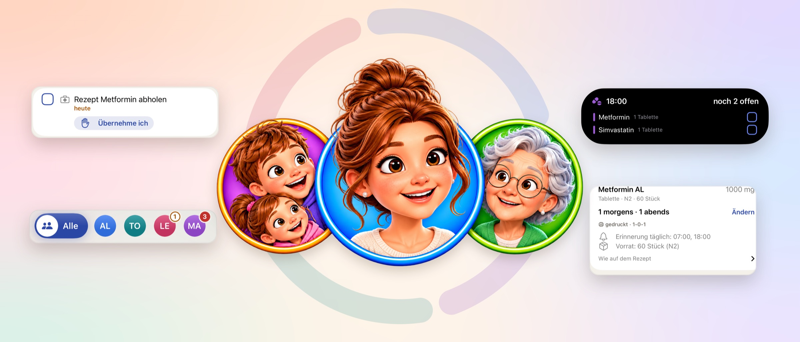
So sieht es aus
Echte Ansichten aus der App, von der Begrüßung bis zur Notfallkarte.
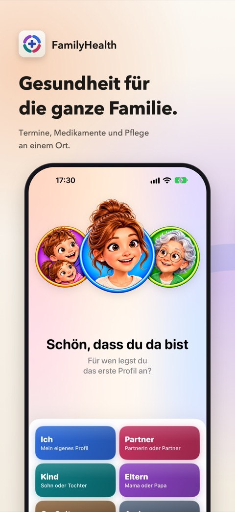
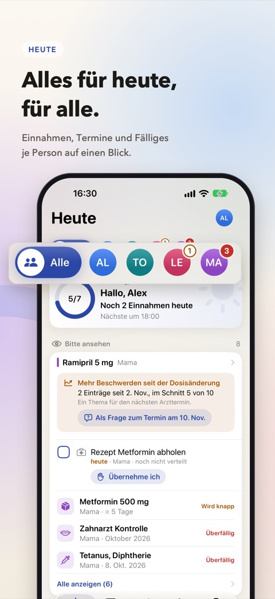
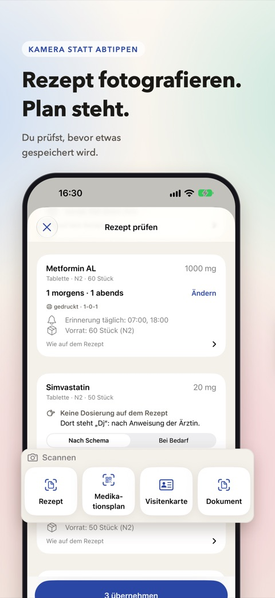
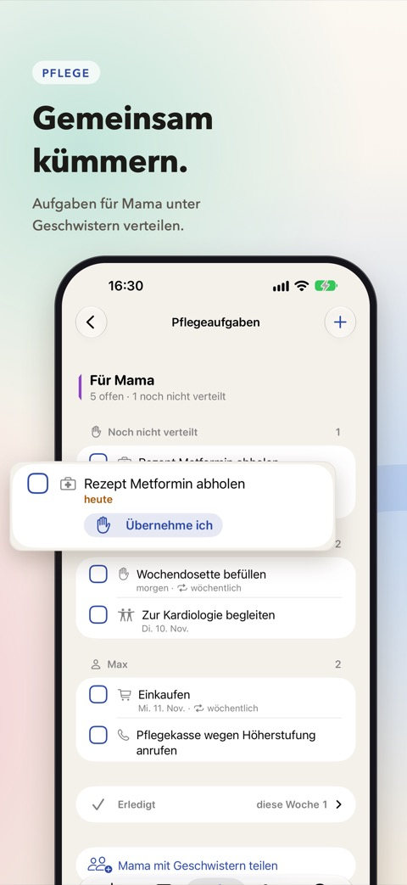
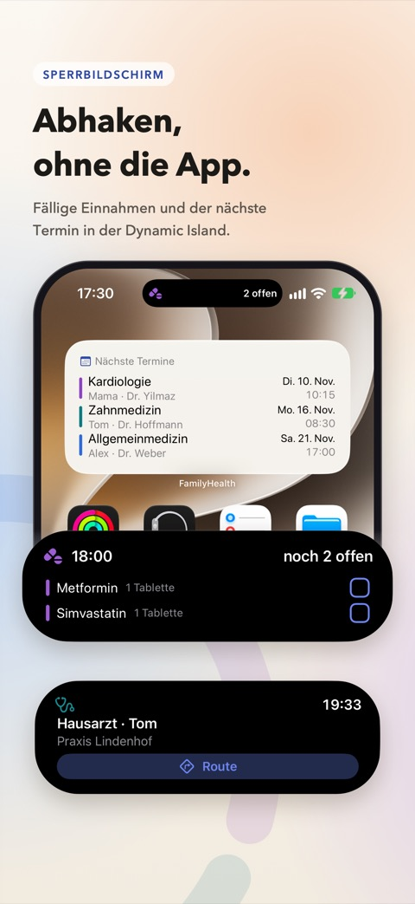
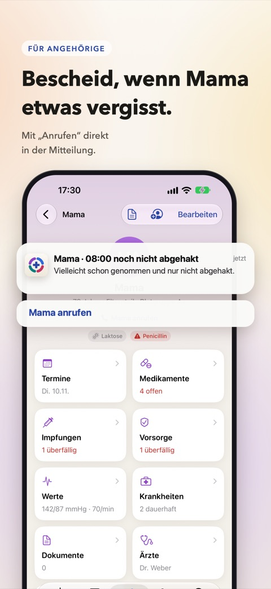
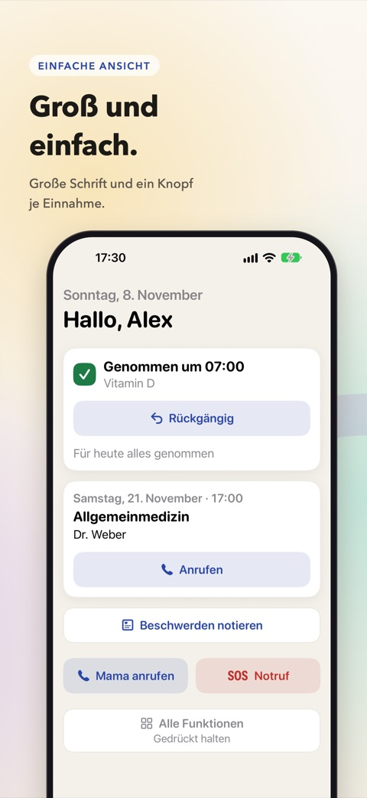
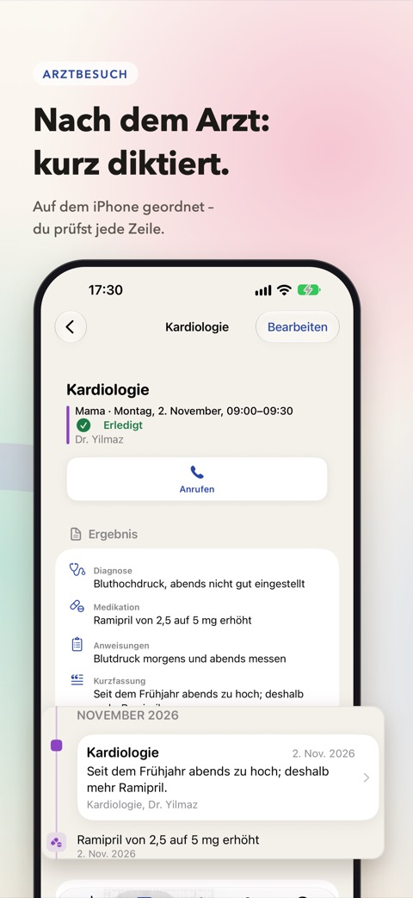
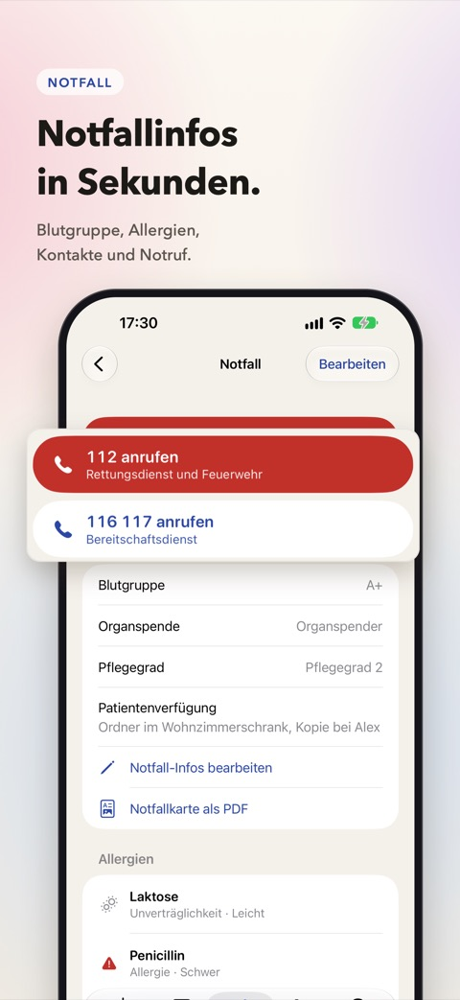
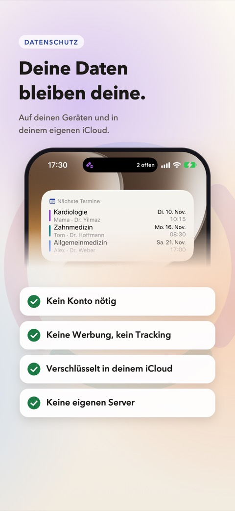
Was FamilyHealth kann
Für dich, deine Kinder und deine Eltern, auch wenn ihr nicht unter einem Dach wohnt.
Heute auf einen Blick
Ein Ring je Person zeigt, ob alles in Ordnung ist. Offene Einnahmen, Termine, Fälliges und Pflegeaufgaben stehen auf einer Seite.
Medikamente
Rezept oder Medikationsplan fotografieren und prüfen, dann stehen Plan, Erinnerungen und Vorrat. Abhaken in der Mitteilung, im Widget oder auf dem Sperrbildschirm.
Termine und Arztbesuche
Mit Checkliste und Fragen an den Arzt. Danach den Besuch diktieren und auf dem iPhone ordnen lassen, auf unterstützten Geräten mit Apple Intelligence.
Impfpass und Vorsorge
Digitaler Impfpass mit nächster Auffrischung und die gesetzliche Vorsorge in Deutschland nach Alter und Geschlecht, von der U2 bis zur Krebsfrüherkennung.
Gemeinsam kümmern
Das Profil der Eltern mit Geschwistern teilen, Pflegeaufgaben verteilen und Bescheid bekommen, wenn Mama eine Einnahme noch nicht abgehakt hat.
Einfache Ansicht
Für Eltern: große Schrift und nur, was heute zählt, mit einem Knopf je Einnahme, dem nächsten Termin und dem Notruf.
Notfallkarte
Blutgruppe, Allergien, Medikamente und Notfallkontakte auf einen Blick, 112 und 116 117 mit einem Tipp, als PDF zum Teilen.
Dokumente und Werte
Arztbriefe scannen und durchsuchen, Blutdruck oder Blutzucker im Diagramm, auf Wunsch mit Werten aus Apple Health.
Deine Daten bleiben deine.
Gespeichert auf deinen Geräten und in deinem eigenen iCloud-Konto. Texterkennung und Zusammenfassungen laufen auf dem iPhone.
- Kein Konto nötig
- Keine Werbung, kein Tracking
- Verschlüsselt in deinem iCloud
- Keine eigenen Server
Hinweis: FamilyHealth organisiert und erinnert. Die App ist kein Medizinprodukt und ersetzt keinen ärztlichen Rat. Im Notfall: 112.